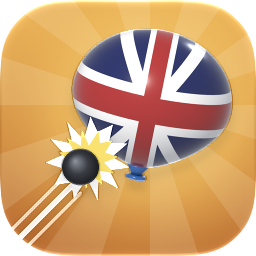

Colonial Skies
No taxation without air defense.
The game
Colonial Skies is a satirical tower defense game for iPhone, iPad and Mac. His Majesty's Royal Aeronautical Armada flies its tax balloons, dirigibles and a flying throne along the roads of six battlefields, and you build Minutemen, cannons, a Liberty Bell, Franklin's Kite Lab and more beside the road to pop them before they reach town.
How to play
- Start a battle
- Tap Campaign, choose a battlefield and a difficulty, then March.
- Build towers
- Choose a tower from the shop, then tap the field beside the road to post it. Tap Start when you're ready for the round.
- Upgrade
- Tap a tower on the field to see its two upgrade paths in the shop's place. Tap an upgrade's picture to see what it changes before you buy it.
- Learn the threats
- The Almanac on the main menu explains every threat and every tower.
Common questions
- My towers stopped firing.
- Loyalist spies hide from towers that can't spot them. Spyglass, Bifocals, Crow's Nest and an Old North Church with Two Lanterns can see them. The game warns you before a round brings spies nothing can see.
- Is my battle saved?
- Yes. Battles save after every round and every change to your towers between rounds. Continue on the main menu picks it back up.
- What can I buy?
- Recruit and Regular difficulty, every battlefield and every tower are free. The Continental difficulty is a one-time purchase, and five cosmetics change how the game looks, never how it plays.
- I bought something on another device.
- Open the General Store or Settings and tap Restore Purchases.
Get in touch
Found a problem or have an idea? Open an issue on the game's GitHub page.